Se implementó un flujo de entrega continua basado en GitOps sobre un clúster local de
Kubernetes (Minikube con controlador Docker). La aplicación desplegada es una tienda web
(streetwear) desarrollada previamente en React 18 y servida por nginx, empaquetada en una
imagen propia. El repositorio Git actúa como única fuente de verdad y Argo CD reconcilia de
forma automática el estado declarado en la carpeta k8s/ con el estado real del clúster.
El despliegue incluye un Deployment con dos réplicas, un Service NodePort, un Horizontal Pod Autoscaler entre 2 y 5 réplicas con objetivo de CPU del 50 % y Metrics Server como proveedor de métricas. Se verificó el escalamiento real de 2 a 5 Pods bajo carga y el retorno automático a 2, además de la sincronización automática de un cambio hecho únicamente en Git y de la autorreparación de un objeto eliminado manualmente.
El informe se complementa con 27 capturas del proceso real y con tres anexos: una guía de ejecución desde cero (Anexo A), una lista de verificación de cada requisito de la consigna (Anexo B) y un índice de evidencias (Anexo C).
kubectl apply para sincronizar| Indicador | Resultado comprobado |
|---|---|
| Aplicación desplegada | Tienda React servida por nginx (imagen udla-web:1.0) |
| Herramienta GitOps | Argo CD v3.6.1, Automated Sync con prune y selfHeal |
| Deployment inicial | 2 réplicas disponibles (2/2) |
| Escalado máximo observado | 5 réplicas disponibles (5/5) |
| Reducción automática | De 5 a 2 réplicas |
| Sincronización automática | Cambio en Git aplicado sin kubectl apply (nuevo ReplicaSet) |
| Autorreparación | Service eliminado y recreado por Argo CD |
| Acceso web | Service NodePort 80:30080 y túnel de Minikube |
| Entrega | Repositorio público, manifiestos, 27 evidencias numeradas e informe |
Automatizar el despliegue de una aplicación web en Kubernetes mediante Argo CD, utilizando un repositorio Git como fuente de verdad, con los recursos Deployment, Service y Horizontal Pod Autoscaler, y demostrar la sincronización automática ante cambios en el repositorio.
El alcance es una prueba local de aprendizaje: no contempla un clúster multinodo, TLS corporativo, persistencia compartida ni un registro de imágenes privado. Se considera exitoso cuando la aplicación está disponible (2/2), el HPA opera entre 2 y 5 réplicas con objetivo del 50 %, Argo CD muestra la aplicación como Synced / Healthy, un cambio hecho únicamente en el repositorio se refleja en el clúster sin intervención manual y un recurso eliminado se restablece automáticamente.
| Concepto | Descripción aplicada en el trabajo |
|---|---|
| GitOps | Modelo de operación en el que el repositorio Git describe el estado deseado y un agente (Argo CD) lo aplica y lo mantiene de forma continua. |
| Argo CD | Controlador de entrega continua para Kubernetes. Compara el estado del repositorio con el del clúster y ejecuta la sincronización; detecta desviaciones y las corrige. |
| Deployment | Controlador declarativo que administra un ReplicaSet y la plantilla de los Pods. Declara réplicas, imagen, recursos y sondas. |
| ReplicaSet | Mantiene el número de Pods indicado. Al cambiar la plantilla, el Deployment crea un ReplicaSet nuevo y retira el anterior (RollingUpdate). |
| Service NodePort | Punto de acceso estable: selecciona Pods por etiqueta y publica un puerto del nodo (30080) hacia el puerto del contenedor (80). |
| Metrics Server / HPA | Metrics Server expone el consumo de CPU y memoria; el HPA compara ese consumo con la solicitud de CPU del Pod y ajusta las réplicas dentro del rango permitido. |
| Minikube | Clúster Kubernetes de un solo nodo sobre Docker Desktop, con runtime containerd. |
El flujo tiene tres planos: el desarrollador publica cambios en GitHub; Argo CD, que corre dentro del clúster, compara el repositorio con el estado real; y los controladores de Kubernetes crean o ajustan los objetos. El navegador del usuario consume la aplicación a través del Service NodePort.
Desarrollador
| git push
v
+------------------------------+
| GitHub (fuente de verdad) | k8s/deployment.yml
| | k8s/service.yml
| | k8s/hpa.yml
+--------------+---------------+
| reconciliacion automatica
v
+---------------+
| Argo CD | OutOfSync -> Synced
+-------+-------+
| aplica el estado declarado
v
+--------------------------------------------+
| Kubernetes (Minikube) - streetwear-lab |
| |
| Service NodePort 30080 --> Deployment |
| |- Pod 1 |
| |- Pod 2 |
| |- ... hasta 5|
| |
| HPA: 2 -> 5 replicas, CPU 50 % |
| Metrics Server: metricas de CPU |
+--------------------------------------------+| Elemento | Configuración aplicada | Función |
|---|---|---|
| Namespace | streetwear-lab | Aislar los recursos de la actividad |
| Deployment | streetwear-web, 2 réplicas iniciales | Declarar la plantilla y el número de Pods |
| Imagen | udla-web:1.0 (React + nginx) | Artefacto propio de la aplicación |
| Service | NodePort, puerto 80 → 80, nodePort 30080 | Acceso externo a la aplicación |
| HPA | mínimo 2, máximo 5, CPU 50 % | Escalamiento horizontal automático |
| CPU solicitada | 100m | Base del cálculo de utilización del HPA |
| Memoria solicitada | 128Mi | Reserva para planificación |
| Límites | 500m CPU / 320Mi memoria | Tope de consumo por Pod |
| Estrategia | RollingUpdate (maxUnavailable 0) | Actualizar sin cortar el servicio |
| Sincronización | Automated (prune + selfHeal) | Aplicar y corregir el estado desde Git |
Se utilizó Windows con Docker Desktop. El clúster se creó con Minikube usando el controlador
Docker, con 4 CPU y 6 GB de memoria para alojar Argo CD junto con la aplicación. El runtime del
nodo es containerd, por lo que la imagen se construyó en el equipo y se cargó al clúster con
minikube image load. La Figura 1 registra las versiones exactas con las que se
obtuvieron los resultados; la Figura 2 confirma que Metrics Server está habilitado y entregando
métricas, condición indispensable para que el HPA funcione.
| Herramienta | Versión observada |
|---|---|
| Docker Desktop | 29.6.2 |
| Minikube | v1.39.0 |
| kubectl (cliente) | v1.36.1 |
| Kubernetes | v1.37.0 (containerd 2.3.4) |
| Argo CD | v3.6.1 (manifiestos stable) |
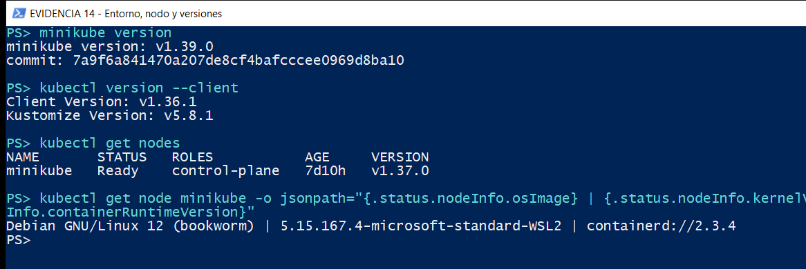
minikube en estado
Ready y detalles del sistema operativo, kernel y runtime del nodo.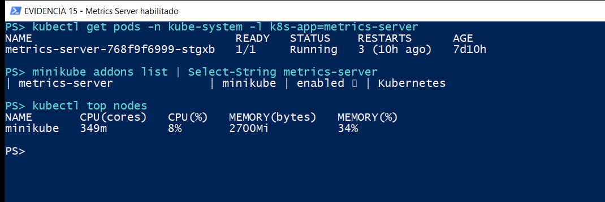
kubectl top nodes devolviendo CPU y memoria del nodo: la fuente de
métricas del HPA está operativa.
La imagen se construyó con un Dockerfile de dos etapas y se cargó en el runtime del
nodo. La Figura 3 comprueba que la imagen existe en el host y dentro del clúster, con su tamaño y
arquitectura.
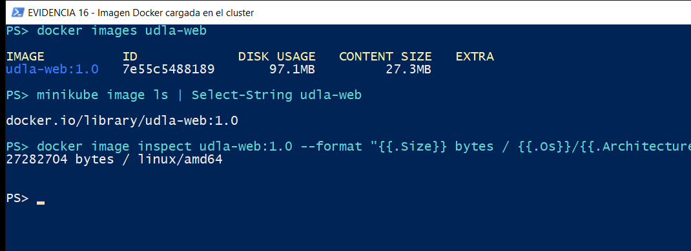
udla-web:1.0 construida en el host y presente en
el runtime del clúster (minikube image ls), con 27.3 MB de contenido y arquitectura
linux/amd64.udla-argocd-gitops/
|- app/ # aplicacion (React + nginx) y su Dockerfile
|- k8s/
| |- deployment.yml # 2 replicas, recursos, sondas, puerto 80
| |- service.yml # NodePort 80 -> 80 (30080)
| \- hpa.yml # 2-5 replicas, CPU 50 %
|- argocd/
| \- application.yml # Application con Automated Sync
|- evidencias/ # 27 capturas numeradas
|- informe/ # este informe (HTML y PDF)
\- README.md
La Figura 4 lista los archivos versionados que son relevantes para la revisión: los tres manifiestos
de k8s/, la Application de Argo CD, el informe y las 27 capturas
(incluidas las 14 nuevas de esta versión).
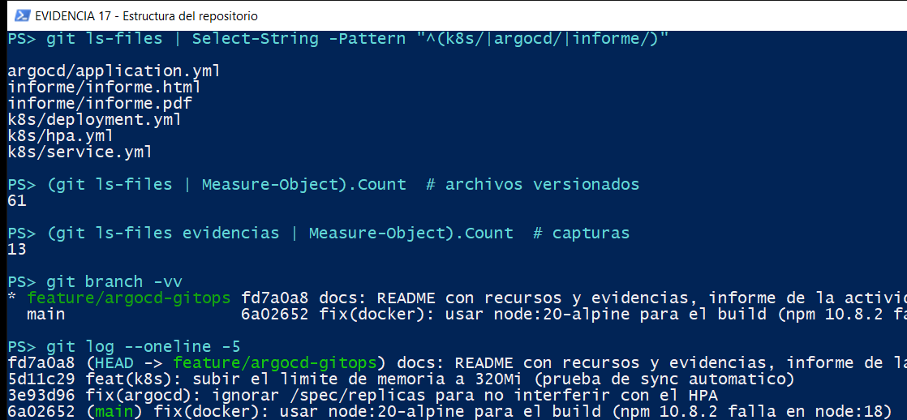
k8s/, argocd/ e
informe/, total de 61 archivos y 27 capturas, rama
feature/argocd-gitops e historial de commits.
La aplicación se empaquetó con un Dockerfile de dos etapas: compilación de React con
node:20-alpine y publicación de los archivos estáticos con nginx:alpine.
El servidor nginx incluye la regla try_files necesaria para una aplicación de una sola
página y una ruta /healthz usada por las sondas.
docker build -t udla-web:1.0 -f app/Dockerfile app
minikube image load udla-web:1.0
minikube image ls | findstr udla-web
El manifiesto declara replicas: 2, etiquetas coherentes entre
selector.matchLabels y template.metadata.labels
(app: streetwear-web), la imagen propia con imagePullPolicy: IfNotPresent
y el puerto 80 del contenedor. Se definieron requests (100m / 128Mi) para que el HPA
tenga una base de cálculo y limits (500m / 320Mi) como tope. Las sondas
startup, readiness y liveness controlan cuándo el Pod recibe tráfico y cuándo
debe reiniciarse.
El Service es de tipo NodePort, con port: 80, targetPort: 80
y nodePort: 30080; su selector app: streetwear-web coincide con las
etiquetas de los Pods. El HPA usa autoscaling/v2, apunta al Deployment
streetwear-web y fija minReplicas: 2, maxReplicas: 5 y
averageUtilization: 50 sobre CPU, con políticas de escalado para evitar cambios
bruscos.
Se creó la Application streetwear-web apuntando al repositorio público, a
la rama main y a la ruta k8s, con syncPolicy.automated
(prune y selfHeal) y CreateNamespace=true. La aplicación se
registró con un único kubectl apply -f argocd/application.yml; a partir de ahí Argo CD
creó el Deployment, el Service y el HPA.
Application excluye /spec/replicas mediante
ignoreDifferences. De lo contrario, Argo CD revertiría cada escalado del HPA y se
produciría un bucle de reconciliación. Con esta exclusión, Argo CD administra la plantilla
(imagen, recursos, sondas) y el HPA administra el número de réplicas.
Cada subsección presenta la comprobación ejecutada y la captura correspondiente, tomada del entorno real. En el Anexo A se indica cómo repetir exactamente cada comprobación.
Los siete Pods de Argo CD quedaron en estado Running y la aplicación se registró
correctamente. La primera conciliación creó los tres recursos en el namespace
streetwear-lab.
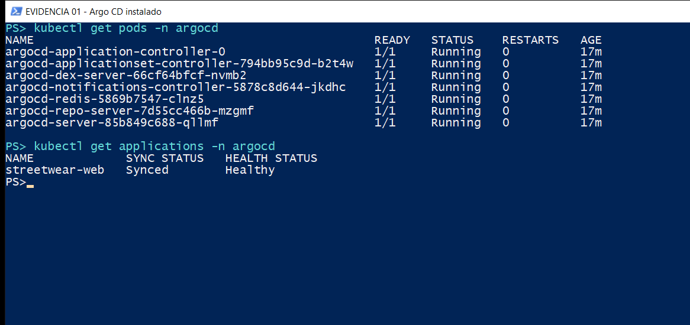
streetwear-web en estado Synced / Healthy.
El namespace streetwear-lab fue creado automáticamente por Argo CD
(CreateNamespace=true). Un solo kubectl get all muestra el inventario
completo: Pods, Service, Deployment, ReplicaSets e HPA.
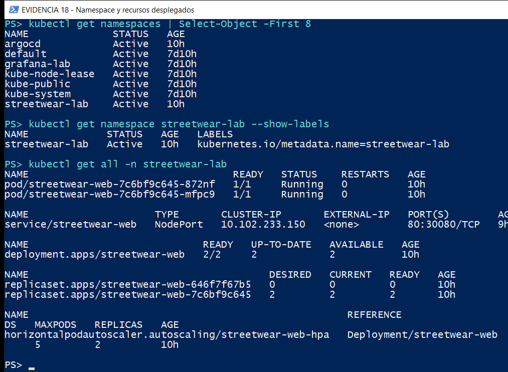
streetwear-lab activo y el
inventario completo de recursos creados por Argo CD.
El describe del Deployment confirma las etiquetas, el selector
(app=streetwear-web), la estrategia RollingUpdate con
maxUnavailable: 0, el puerto 80 y, sobre todo, las solicitudes y límites exigidos por
la consigna: requests 100m / 128Mi y limits 500m / 320Mi.
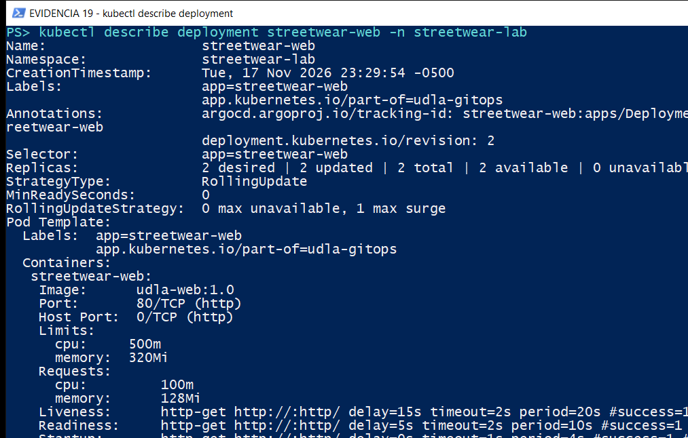
kubectl describe deployment: etiquetas y selector,
réplicas 2/2, RollingUpdate, imagen, puerto, límites, solicitudes y sondas.El historial de revisiones muestra dos versiones del Deployment: la inicial y la generada por el cambio aplicado desde Git (límite de memoria 320Mi). El ReplicaSet nuevo quedó con 2/2 y el anterior en 0, evidencia del reemplazo ordenado sin cortar el servicio.
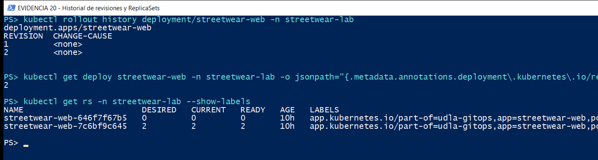
kubectl rollout history (revisiones 1 y 2), revisión
actual y ReplicaSets con sus etiquetas pod-template-hash.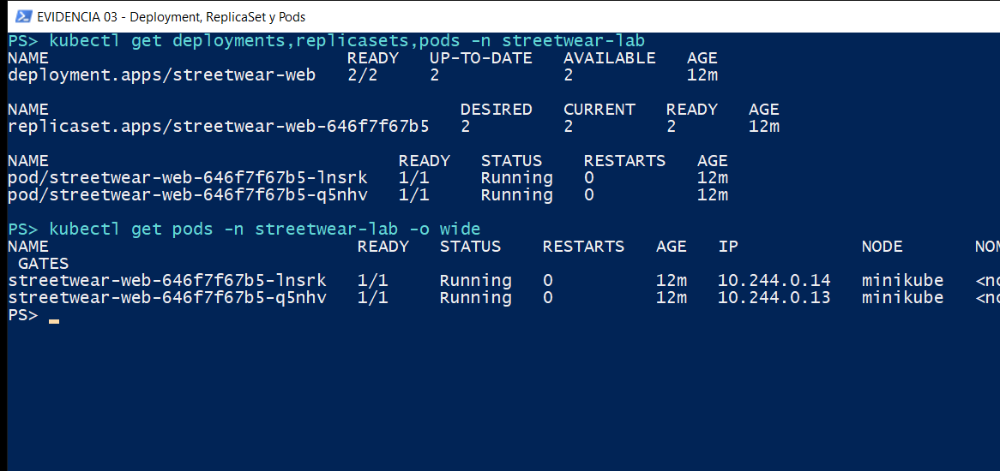
El Service quedó con IP interna 10.102.233.150 y publicó el puerto
80:30080/TCP. Sus endpoints corresponden a las IP de los dos Pods, lo que
confirma que el selector está bien asociado; el selector recuperado del objeto vivo es exactamente
{"app":"streetwear-web"}. A través de ese NodePort la aplicación responde en el
navegador con el catálogo completo (Figura 11).
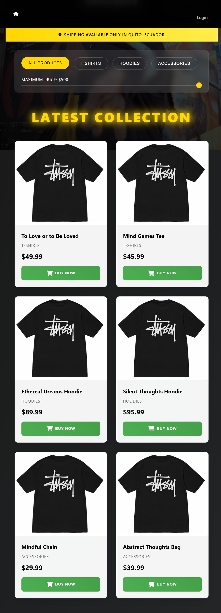

kubectl describe svc: tipo NodePort, selector
app=streetwear-web, targetPort: 80 y nodePort: 30080, con
dos endpoints activos.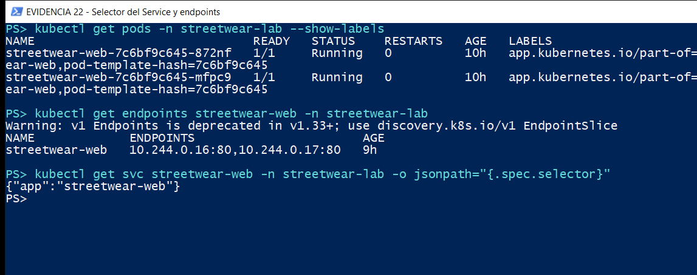
Los logs de nginx muestran peticiones GET / con código 200 y agente
kube-probe/1.37: son las sondas readiness y liveness ejecutándose. Además,
dentro del contenedor el endpoint /healthz responde ok, lo que confirma
que la aplicación está realmente sirviendo tráfico.
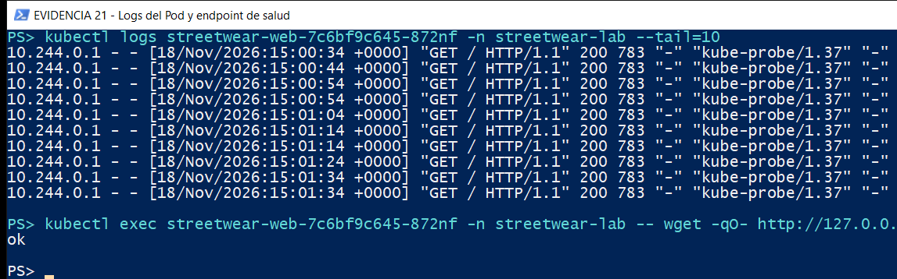
/healthz devolviendo ok.
Con Metrics Server habilitado se obtuvieron las métricas de los Pods
(kubectl top pods). El HPA reportó cpu: 1%/50%, confirmando que puede
calcular la utilización respecto de la solicitud de 100m por Pod. El valor se interpreta sobre la
request, no sobre la capacidad total del procesador. La Figura 17 detalla el objeto vivo:
referencia al Deployment, mínimo 2, máximo 5, objetivo 50 % y las condiciones
AbleToScale y ScalingActive en True.

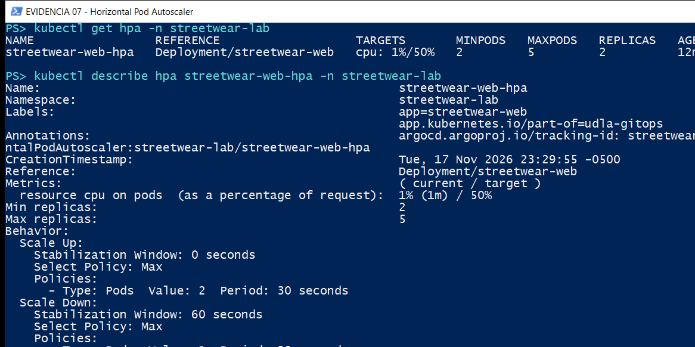
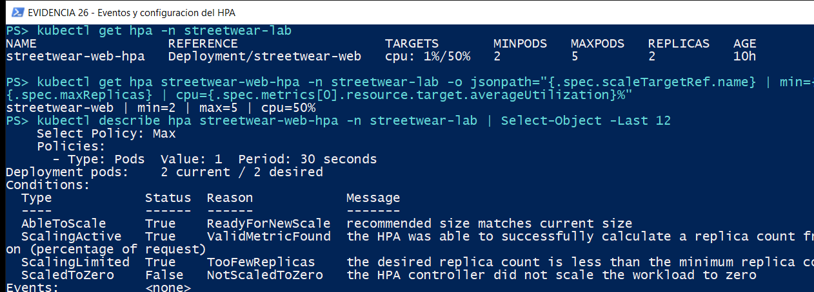
cpu 1%/50%, min 2, max 5 y condiciones
AbleToScale, ScalingActive y ScalingLimited, con las políticas de escalado
ascendente y descendente declaradas.
Para comprobar que el repositorio es la fuente de verdad se modificó únicamente el manifiesto
k8s/deployment.yml en Git (el límite de memoria pasó de 256Mi a 320Mi) y se publicó en
la rama main. No se ejecutó ningún kubectl apply.

main del repositorio
udla-argocd-gitops.
Argo CD detectó la diferencia, aplicó el manifiesto y el Deployment generó un nuevo ReplicaSet
(7c6bf9c645) que reemplazó a los Pods anteriores sin intervención manual. La
aplicación permaneció Synced / Healthy.
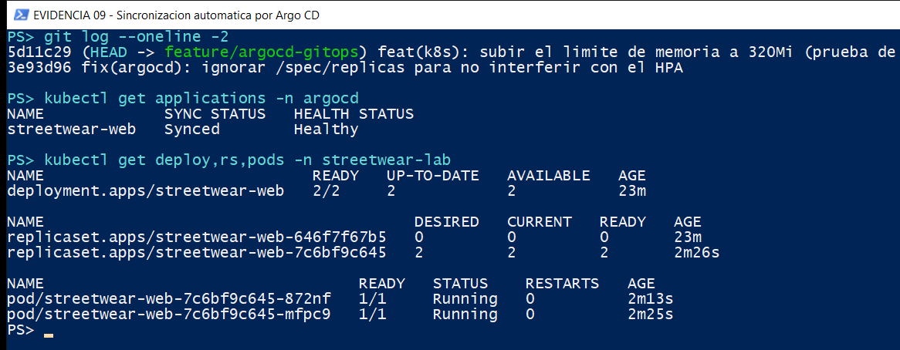
La definición viva de la Application demuestra los cuatro puntos exigidos por la
consigna: repositorio de GitHub, ruta k8s, rama main y política
automática con prune y selfHeal.
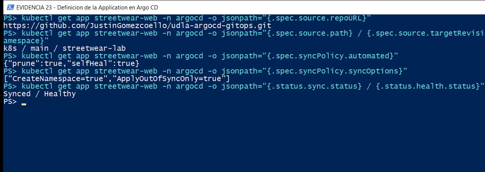
repoURL, path: k8s,
targetRevision: main, syncPolicy.automated con
prune y selfHeal, estado Synced / Healthy y revisión
sincronizada.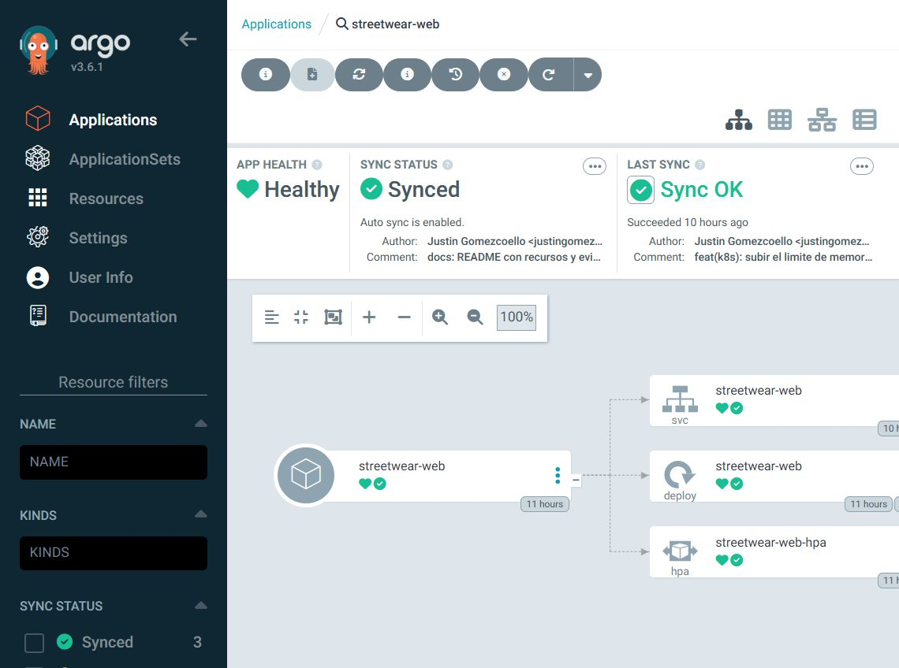
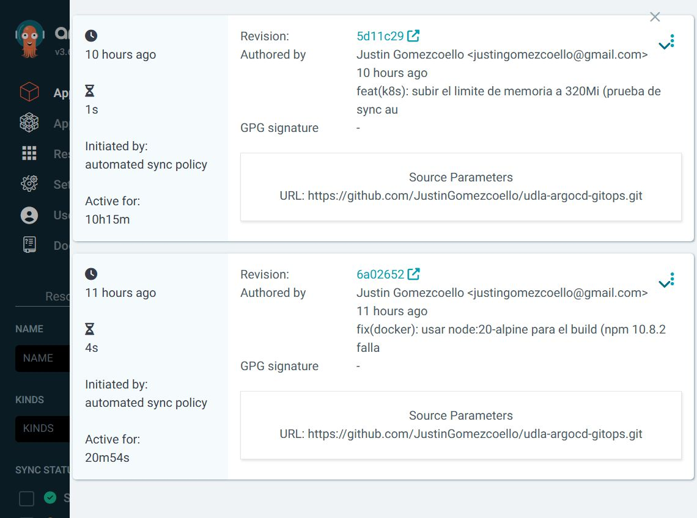
5d11c29 y 6a02652) fue Initiated by: automated sync
policy, es decir, sin intervención manual.
Se generó carga con un Pod temporal que ejecutó ab (400 conexiones concurrentes)
contra el Service. El consumo subió a cerca de 482 % de la solicitud de CPU y el HPA escaló
en dos pasos: 2 → 4 → 5 réplicas. El Deployment llegó a 5/5 con cinco Pods
Running.
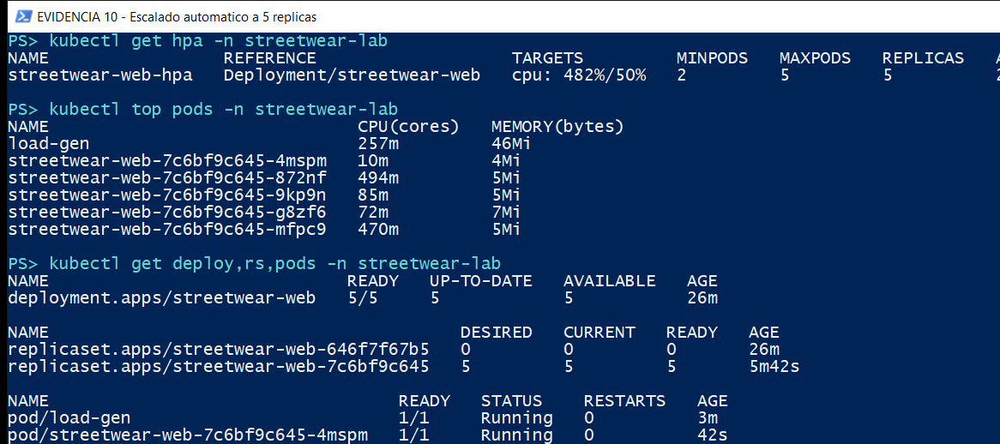
Al eliminar el generador de carga el consumo volvió a ~1 % y el HPA redujo las réplicas de 5 a 2, respetando la ventana de estabilización configurada para el descenso.
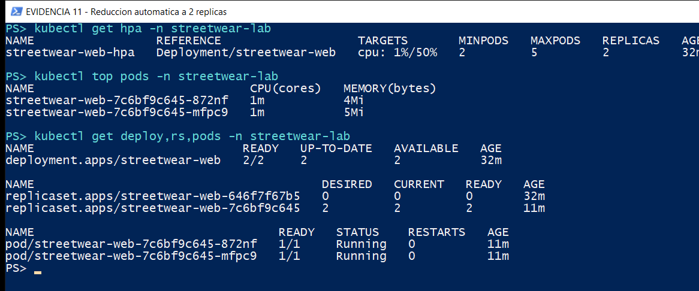
Como prueba de la reconciliación se eliminó manualmente el Service con kubectl delete.
Argo CD detectó la ausencia del objeto y lo recreó a partir del manifiesto del repositorio, sin
intervención humana. El Service recreado conservó el tipo NodePort y el puerto 30080.
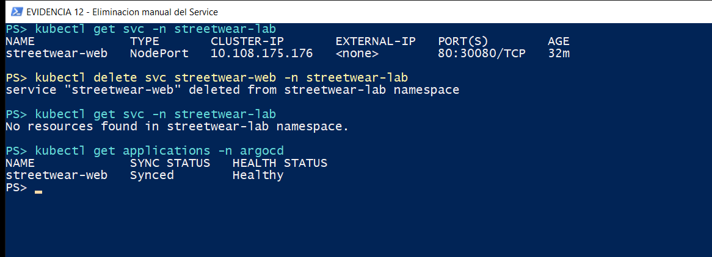

El estado final, con la carga retirada, resume el resultado: dos Pods Running sin reinicios, Service NodePort en 30080, Deployment 2/2, HPA entre 2 y 5, aplicación Synced / Healthy y siete Pods de Argo CD operativos.
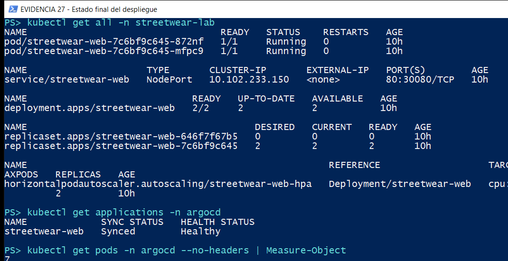
streetwear-lab, aplicación
Synced / Healthy y conteo de Pods de Argo CD.npm install durante la construcción
La primera versión del Dockerfile usaba node:18-alpine y el
npm install terminaba con código 1 sin mensaje claro; el registro era accesible desde
el contenedor. Se verificó que node:20-alpine funcionaba correctamente en el mismo
entorno y se actualizó la etapa de compilación. La imagen final compiló sin errores.
La instalación con kubectl apply falló con
"The CustomResourceDefinition applicationsets.argoproj.io is invalid: metadata.annotations: Too
long", porque la anotación de last-applied-configuration supera el límite de 256 KB. Se
resolvió usando Server-Side Apply
(kubectl apply --server-side --force-conflicts). Un segundo intento fue necesario
porque dos NetworkPolicies no se crearon por un timeout transitorio de etcd.
spec.replicas
Si Argo CD administra spec.replicas mientras el HPA también lo modifica, cada escalado
del HPA se revierte en la siguiente reconciliación y se entra en un bucle. Se añadió
ignoreDifferences para /spec/replicas del Deployment; así Argo CD sigue
detectando cambios en el resto de la plantilla y el HPA conserva la autoridad sobre el número de
réplicas. Esta decisión quedó documentada en el repositorio.
El servidor de Argo CD publica HTTPS con un certificado autofirmado. Para revisar la interfaz desde
el equipo local se agregó el argumento --insecure al Deployment del servidor y se
expuso con kubectl port-forward. Es un ajuste exclusivo del laboratorio: en un entorno
real se mantiene TLS con un certificado válido.
Con el controlador Docker de Minikube en Windows, la IP del nodo no es alcanzable desde el host. El
acceso se realizó con minikube service, que abre un túnel local hacia el NodePort,
manteniendo el Service publicado en el puerto 30080 dentro del clúster.
minikube image build
minikube image build terminó con código 0 pero sin crear la imagen en el runtime del
nodo (el nodo usa containerd). Se cambió el procedimiento a docker build en el host
seguido de minikube image load, que sí dejó la imagen disponible; el Deployment usa
imagePullPolicy: IfNotPresent para tomarla del cache local.
El trabajo demuestra el cambio de modelo que propone GitOps: el clúster deja de configurarse con comandos manuales y pasa a reconciliarse de forma continua contra un repositorio. Argo CD aplicó los tres manifiestos en la primera sincronización, detectó posteriormente un cambio hecho únicamente en Git y lo reflejó creando un nuevo ReplicaSet, y recreó un Service eliminado sin intervención humana.
La verificación del escalamiento mostró que el HPA requiere una solicitud de CPU bien definida y Metrics Server operativo: con 100m solicitados, el objetivo del 50 % equivale a 50m por Pod, por lo que la carga de prueba elevó la utilización muy por encima de la meta y provocó el crecimiento de 2 a 5 réplicas, con retorno posterior a 2 al desaparecer la carga.
También quedó evidenciado un aspecto de diseño relevante: cuando conviven un HPA y una herramienta
GitOps, es necesario excluir spec.replicas de la comparación, de lo contrario ambos
controladores se contradicen. Documentar estas decisiones es parte del valor del repositorio como
fuente de verdad.
El código, los manifiestos y las evidencias están publicados en un repositorio público de GitHub,
rama main, con los archivos k8s/deployment.yml,
k8s/service.yml, k8s/hpa.yml, argocd/application.yml,
app/Dockerfile, la carpeta evidencias/ y el README.md con el
procedimiento completo.
https://github.com/JustinGomezcoello/udla-argocd-gitops
Este anexo permite reproducir todo el trabajo en otro equipo Windows, macOS o Linux. Cada paso
indica el comando, qué debe observarse y cómo se comprueba que quedó bien. Los valores
(udla-web:1.0, streetwear-lab, 30080) son los usados en este
informe; si se cambian, deben cambiarse también en los manifiestos.
| Herramienta | Versión mínima | Verificación |
|---|---|---|
| Docker Desktop (o Docker Engine) | 24 | docker version |
| Minikube | 1.30 | minikube version |
| kubectl | 1.27 | kubectl version --client |
| Git | 2.30 | git --version |
| Cuenta de GitHub | — | Repositorio público con los manifiestos |
| Recursos del equipo | 4 CPU / 6 GB libres | Necesario para Argo CD + app |
En Windows, Docker Desktop debe estar iniciado y con el motor Linux activo antes de continuar;
docker version tiene que mostrar la sección Server.
git clone https://github.com/JustinGomezcoello/udla-argocd-gitops.git
cd udla-argocd-gitops
git ls-files | findstr k8s
Verificación: deben aparecer k8s/deployment.yml, k8s/hpa.yml y
k8s/service.yml. Si el repositorio se va a modificar, conviene trabajar en una rama:
git checkout -b feature/mi-prueba.
minikube start --driver=docker --cpus=4 --memory=6144
kubectl get nodes
Verificación: el nodo minikube debe estar en Ready. Si ya existía un
perfil con otros recursos, Minikube avisa que no puede cambiar CPU/memoria: en ese caso usar
minikube delete y repetir.
minikube addons enable metrics-server
kubectl get pods -n kube-system -l k8s-app=metrics-server
kubectl top nodes
Verificación: el Pod debe estar 1/1 Running y kubectl top nodes debe
devolver CPU y memoria. Si responde "error: metrics not available yet", esperar 1–2 minutos y
repetir: el primer muestreo tarda.
docker build -t udla-web:1.0 -f app/Dockerfile app
minikube image load udla-web:1.0
minikube image ls | findstr udla-web
Verificación: la última línea debe mostrar docker.io/library/udla-web:1.0. No se
usa minikube image build porque en nodos con containerd puede no registrar la imagen;
docker build + minikube image load es equivalente y confiable. No hace falta
un registro externo: el Deployment usa imagePullPolicy: IfNotPresent.
k8s/deployment.yml el campo
image por usuario/udla-web:1.0; en ese caso el clúster sí debe poder
descargarla.
kubectl apply --dry-run=client -f k8s/
type k8s\deployment.yml # Linux/macOS: cat k8s/deployment.yml
Verificación: el dry-run debe responder deployment.apps/streetwear-web
created (dry run) y similares, sin errores de sintaxis. Los puntos a revisar son:
deployment.yml: replicas: 2, selector.matchLabels igual a
template.metadata.labels, containerPort: 80, requests y
limits.service.yml: type: NodePort, port: 80,
targetPort: 80, nodePort: 30080 y selector
app: streetwear-web.hpa.yml: minReplicas: 2, maxReplicas: 5,
averageUtilization: 50 y scaleTargetRef al Deployment.kubectl create namespace argocd
kubectl apply -n argocd --server-side --force-conflicts -f https://raw.githubusercontent.com/argoproj/argo-cd/stable/manifests/install.yaml
kubectl wait --for=condition=Ready pods --all -n argocd --timeout=600s
kubectl get pods -n argocd
Verificación: siete Pods en Running (application-controller,
applicationset-controller, dex-server, notifications-controller, redis,
repo-server, server). El flag --server-side --force-conflicts es
obligatorio: sin él la instalación falla por el tamaño de la anotación de un CRD.
kubectl -n argocd get secret argocd-initial-admin-secret -o jsonpath="{.data.password}"
# decodificar el valor en base64 (o usar: | base64 -d en Linux/macOS)
kubectl -n argocd port-forward svc/argocd-server 8080:443
Abrir https://localhost:8080 y entrar con usuario admin y la contraseña
obtenida. Verificación: se ve la pantalla de aplicaciones (vacía al inicio).
kubectl -n argocd patch deployment argocd-server --type=json -p "[{\"op\":\"add\",\"path\":\"/spec/template/spec/containers/0/args/-\",\"value\":\"--insecure\"}]"
y luego kubectl -n argocd port-forward svc/argocd-server 8080:80, entrando por
http://localhost:8080. El segundo método es el usado en este laboratorio.
kubectl apply -f argocd/application.yml
kubectl get applications -n argocd
Verificación: la aplicación streetwear-web aparece primero como
OutOfSync/Missing y en menos de un minuto pasa a Synced y
Healthy. Si el repositorio es un fork, editar antes
spec.source.repoURL en argocd/application.yml.
kubectl get all -n streetwear-lab
kubectl get deploy,rs,pods,svc,hpa -n streetwear-lab
kubectl describe deployment streetwear-web -n streetwear-lab
kubectl get endpoints streetwear-web -n streetwear-lab
Comprobaciones: Deployment 2/2; dos Pods 1/1 Running; Service
NodePort con 80:30080/TCP; endpoints con las dos IP de los Pods; HPA con
MINPODS 2, MAXPODS 5 y TARGETS con formato
cpu: N%/50%.
minikube service streetwear-web -n streetwear-lab --url
Abrir la URL devuelta (por ejemplo http://127.0.0.1:37778). Verificación: se ve el
catálogo de la tienda. La consola que ejecuta minikube service debe quedar abierta: es
un túnel hacia el NodePort 30080, que es el que exige la consigna. En Linux con el driver
docker también se puede usar http://<IP-del-nodo>:30080.
kubectl run load-gen -n streetwear-lab --image=httpd:alpine --restart=Never -- ab -k -c 400 -n 3000000 http://streetwear-web/
kubectl get hpa -n streetwear-lab -w
Verificación: la columna TARGETS sube muy por encima del 50 % y la columna
REPLICAS crece 2 → 4 → 5; el número de Pods acompaña hasta 5/5. Detener la
carga y esperar 2–3 minutos:
kubectl delete pod load-gen -n streetwear-lab
kubectl get hpa -n streetwear-lab -wVerificación: el consumo vuelve a ~1 % y las réplicas descienden 5 → 2 (la ventana de estabilización configurada retrasa el descenso).
# 1) editar un valor de la plantilla, por ejemplo limits.memory: 320Mi -> 384Mi
git add k8s/deployment.yml
git commit -m "prueba: cambio de limite desde Git"
git push origin main
# 2) observar sin aplicar nada a mano
kubectl get applications -n argocd -w
kubectl get rs -n streetwear-lab
Verificación: sin ejecutar kubectl apply, aparece un ReplicaSet nuevo, los Pods se
reemplazan y la aplicación vuelve a Synced. El sondeo de Argo CD es periódico (unos 3–5
minutos); si se necesita inmediatez se puede pulsar Refresh en la interfaz o configurar un
webhook.
replicas para probar GitOps: ese campo lo administra el HPA y la
Application lo ignora con ignoreDifferences. Cambiar imagen, recursos,
sondas o etiquetas es lo correcto.
kubectl delete svc streetwear-web -n streetwear-lab
kubectl get svc -n streetwear-lab --watch
Verificación: tras unos segundos el Service reaparece con tipo NodePort y
30080, con una antigüedad de segundos. La aplicación sigue Synced / Healthy.
kubectl delete -f argocd/application.yml
kubectl delete namespace streetwear-lab
kubectl delete namespace argocd
minikube stop # o: minikube delete, para borrar el cluster completo| Síntoma | Causa probable | Solución |
|---|---|---|
HPA muestra <unknown>/50% |
Metrics Server aún no recolecta o no está habilitado | minikube addons enable metrics-server y esperar 1–2 min |
Pod en ImagePullBackOff |
La imagen no está en el nodo | minikube image load udla-web:1.0 |
| Instalación de Argo CD falla por anotación de CRD | Límite de 256 KB de last-applied-configuration |
Usar --server-side --force-conflicts |
Argo CD y HPA se contradicen en replicas |
Ambos administran el mismo campo | ignoreDifferences sobre /spec/replicas |
| No abre el NodePort desde el host | Driver Docker en Windows | minikube service streetwear-web -n streetwear-lab |
Navegador rechaza https://localhost:8080 |
Certificado autofirmado | Aceptar la excepción o usar --insecure |
Aplicación Missing de forma permanente |
repoURL o path incorrectos |
Revisar argocd/application.yml y el acceso público al repo |
Correspondencia punto por punto con la consigna de la actividad.
| # | Requisito | Cómo se cumple | Evidencia |
|---|---|---|---|
| 1 | Desplegar una aplicación en Kubernetes (2 réplicas) | Deployment streetwear-web con replicas: 2 |
Figuras 8, 10 |
| 2 | Labels y selectores coherentes | app: streetwear-web en matchLabels y en la plantilla |
Figuras 8, 12 |
| 3 | Requests y limits de CPU y memoria | requests 100m/128Mi, limits 500m/320Mi | Figura 8 |
| 4 | Exponer el puerto de la aplicación | containerPort: 80 y sondas HTTP sobre / |
Figuras 8, 14 |
| 5 | Service de tipo NodePort | type: NodePort, 80:30080/TCP |
Figuras 12, 13 |
| 6 | port y targetPort correctos |
port: 80 → targetPort: 80 |
Figura 12 |
| 7 | Selector del Service coincide con los Pods | app=streetwear-web; dos endpoints activos |
Figura 13 |
| 8 | Verificar accesibilidad de la aplicación | Catálogo abierto en el navegador vía NodePort | Figura 11 |
| 9 | HPA con mínimo 2 réplicas | minReplicas: 2 |
Figuras 16, 17 |
| 10 | HPA con máximo 5 réplicas | maxReplicas: 5 |
Figuras 16, 17 |
| 11 | Objetivo de CPU del 50 % | averageUtilization: 50 sobre cpu |
Figuras 16, 17 |
| 12 | HPA asociado al Deployment | scaleTargetRef → Deployment/streetwear-web |
Figuras 16, 17 |
| 13 | Metrics Server operativo | Addon enabled, kubectl top con datos |
Figura 2 |
| 14 | Escalado comprobado | 2 → 4 → 5 con carga y retorno a 2 | Figuras 23, 24 |
| 15 | Repositorio público en GitHub | JustinGomezcoello/udla-argocd-gitops |
Figuras 4, 18 |
| 16 | Tres manifiestos YAML | k8s/deployment.yml, service.yml, hpa.yml |
Figura 4 |
| 17 | Argo CD apuntando al repositorio y a la ruta de manifiestos | repoURL + path: k8s + targetRevision: main |
Figura 20 |
| 18 | Automated Sync habilitado | prune: true y selfHeal: true; Auto sync is enabled |
Figuras 20, 21, 22 |
| 19 | Argo CD detecta cambios y sincroniza solo | Commit en main → nuevo ReplicaSet sin kubectl apply |
Figuras 18, 19, 22 |
| 20 | Informe con capturas de ejecución | 27 figuras numeradas del entorno real | Todo el documento |
Todos los archivos están en la carpeta evidencias/ del repositorio y se numeran en el
orden en que fueron capturados.
| # | Archivo | Contenido | Figura |
|---|---|---|---|
| 01 | 01-argocd-instalado.png | Argo CD instalado y app registrada | 5 |
| 02 | 02-argocd-ui-sincronizado.jpeg | Interfaz de Argo CD sincronizada | 6 |
| 03 | 03-deployment-replicaset-pods.png | Deployment, ReplicaSet y Pods | 10 |
| 04 | 04-service-nodeport.png | Service NodePort y endpoints | 12 |
| 05 | 05-aplicacion-en-navegador.jpeg | Aplicación en el navegador | 11 |
| 06 | 06-metricas-pods.png | Métricas de CPU y memoria | 15 |
| 07 | 07-hpa-configurado.png | HPA configurado | 16 |
| 08 | 08-cambio-en-el-repositorio.jpeg | Commit en GitHub | 18 |
| 09 | 09-sincronizacion-automatica.png | Sincronización automática | 19 |
| 10 | 10-escalado-a-5-replicas.png | Escalado a 5 réplicas | 23 |
| 11 | 11-reduccion-a-2-replicas.png | Reducción a 2 réplicas | 24 |
| 12 | 12-eliminacion-manual-del-service.png | Service eliminado | 25 |
| 13 | 13-autorreparacion-selfheal.png | Autorreparación | 26 |
| 14 | 14-entorno-nodo-y-versiones.png | Versiones y nodo | 1 |
| 15 | 15-metrics-server.png | Metrics Server habilitado | 2 |
| 16 | 16-imagen-docker.png | Imagen construida y cargada | 3 |
| 17 | 17-estructura-repositorio.png | Estructura del repositorio | 4 |
| 18 | 18-namespace-y-recursos.png | Namespace y recursos | 7 |
| 19 | 19-describe-deployment.png | describe del Deployment | 8 |
| 20 | 20-historial-de-rollout.png | Historial de revisiones | 9 |
| 21 | 21-logs-y-healthz.png | Logs y /healthz | 14 |
| 22 | 22-selector-y-endpoints.png | Selector y endpoints | 13 |
| 23 | 23-aplicacion-de-argocd.png | Definición de la Application | 20 |
| 24 | 24-argo-ui-arbol-de-recursos.jpeg | Árbol de recursos en Argo CD | 21 |
| 25 | 25-argo-ui-historial.jpeg | Historial en Argo CD | 22 |
| 26 | 26-eventos-del-hpa.png | Estado y condiciones del HPA | 17 |
| 27 | 27-estado-final.png | Estado final del despliegue | 27 |